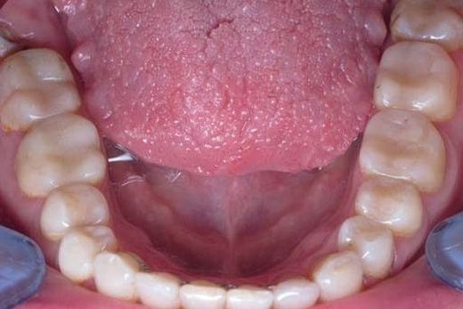
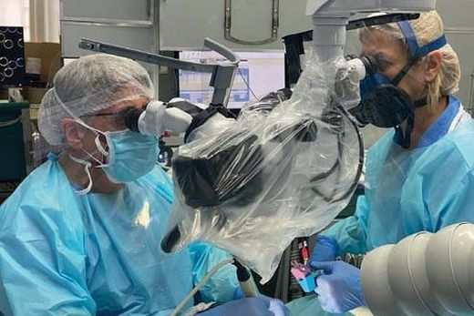
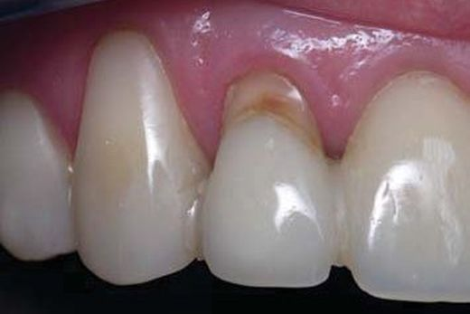
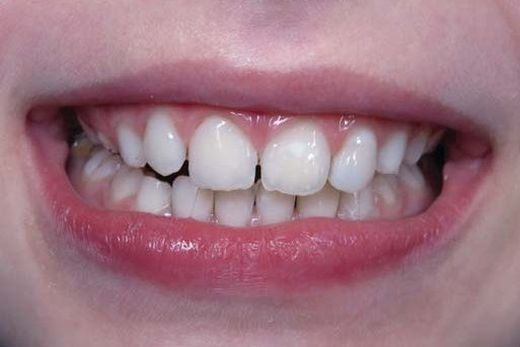
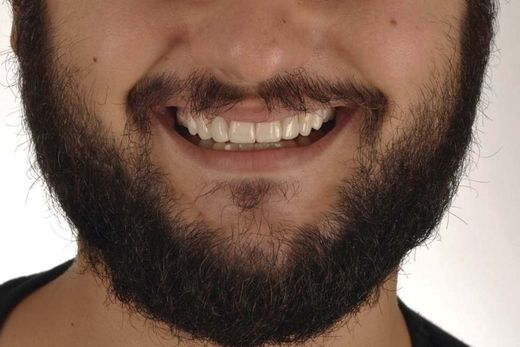
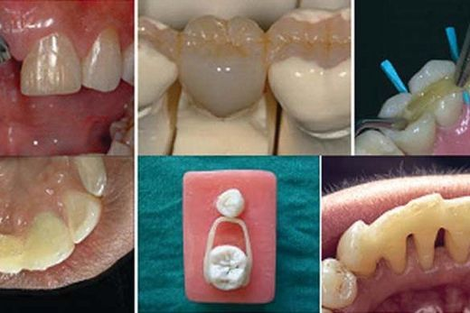
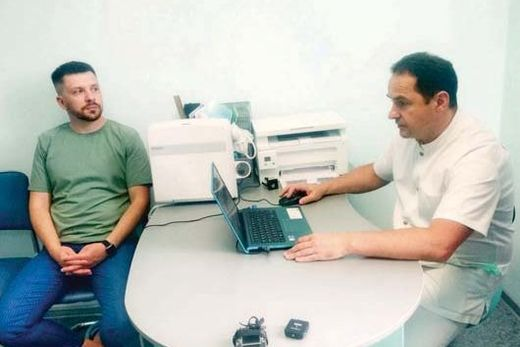
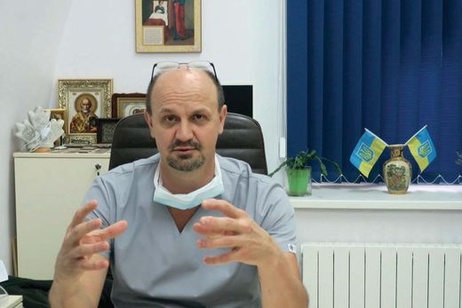

Статті ДентАрт
Журнал про науку та мистецтво в стоматології
«ДентАрт» — ілюстрований міжнародний журнал для лікарів-практиків. Тут ми поступово публікуємо статті номерів онлайн: естетика прямої та непрямої реставрації, ендодонтія, дитяча стоматологія, матеріалознавство, організація практики та інтерв’ю з визначними стоматологами.
«ДентАрт» № 2 (107)
2022 рік
Практичний досвід
Особливості реставрації зубів і зубних рядів
Ольга Пономаренко
Практичні курси
Ендодонтичне лікування в епоху пандемії COVID-19
Джуліан Веббер
Практичні курси
Реставрація зубів з під’ясенним дефектом
Сергій Радлінський
Практичні курси
Естетичне відновлення зубів у дітей
Олена Бережна, Ксенія Лазарєва
Практичний досвід
Нові матеріали для відновлення естетики і функції стертих зубів
Стефан Кубі
Огляди
Реставраційні композити на основі скловолокна. Частина 2
Абдул Самад Хан та ін.
Новини
Нові умови виписування антибіотиків
Новини
Своя справа
Конфлікти з пацієнтами у медичному закладі
Володимир Заїка
Вітальня
Ігор Федірко: «Кожен повинен під час війни працювати…»
Інтерв’ю · Сергій РадлінськийПро журнал. «ДентАрт» видається з 1995 року і став першим в Україні фаховим стоматологічним журналом, який поєднав науку, клінічну практику та естетику. Нові номери переносимо в онлайн поступово — стежте за оновленнями цієї сторінки.